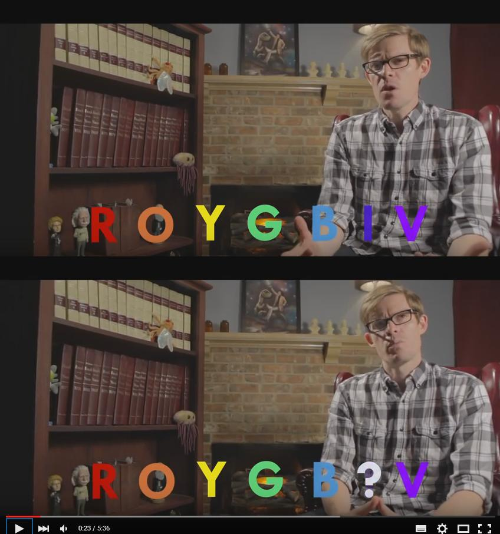
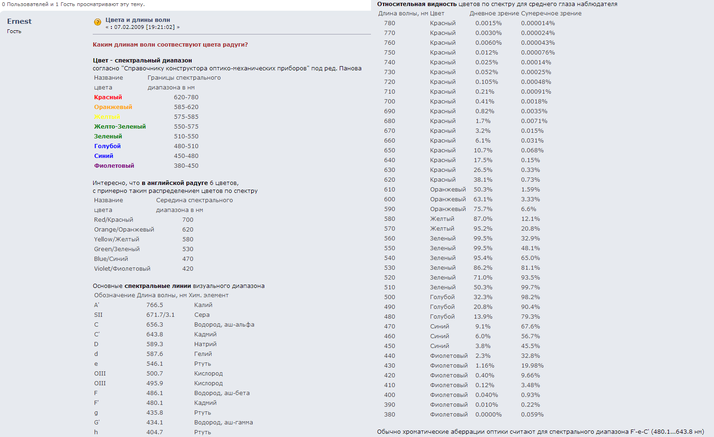
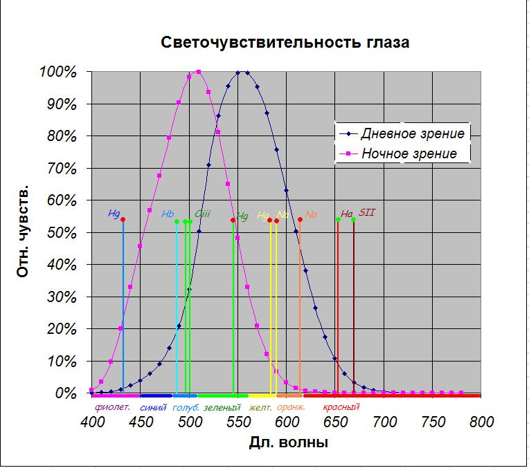

Yggdrasill structure
(inspired by roman sephirot (это слово сливает сферы с цифирями,
тогда буквы кубы) (by which name I would rather see the "plebeian
tree of life" from the up above) based on bornholm alphabet (see
aeiou.ru/index-28.html ) which happens to correspond armanen runes
(https://vk.com/photo58166550_378691152)
, and those 18 allowed me to question the translation of
Tacitus and now I think he was telling of dice, though Tyson says
no archeologic finding supports existing of runic dies, but
there's a word Ætt:
Eoghan Odinsson. Northern Lore: A Field Guide to the Northern
Mind-Body-Spirit:
The Elder Futhark, used for writing Proto-Norse, consists of 24
runes that often are arranged in three groups of eight; each group
is referred to as an Ætt. The earliest known sequential listing of
the full set of 24 runes dates to approximately CE 400 and is
found on the Kylver Stone in Gotland, Sweden.
Tacitvs. Germania:
Auspicia sortesque ut qui maxime observant: sortium
eonsuetudo simplex, virgam frugiferae arbori
decisam in surculos amjnitant eosque notis quibusdam
discretos suj)er candidam vestem temere ac fortuito
spargunt. mox, si publice consultetur, sacerdos
civitatis, sin privatim, ipse pater familiae, precatus
deos caelumque suspiciens ter singulos tollit, sublatos
secundum impressam ante notam interpretatur. si
prohibuerunt, nulla de eadem re in eundem diem
consultatio
Armanen runes:
whether von List took it from that stone (academically considered
to be authentic, but dated into a later period - whether the
dating is wrong or is it just a copy from some golden piece
ordered to be recast for example) or did he deliver that
prehistoric tradition from some other source, was he not
considered academic because the source was not some academic book
or is it because history is a maid of ideology, didn't they
destroy those cultures in vain I hope they realized it's wrong and
actually futile, however that system works it's too often not
scientific itself to be bothered
Цифры сферы, а Буквы кубы
1 первый белый (ассоциативно так понял сразу, затем нашёл
корреляцию у наркоманов)
2 второй золотой (ассоцитивно так почувствовал (внутри всё было,
смотри сколько в этом слове в) злато зло, а бог единица, дьявол
два согласно того прихода от момента, который в одном
трипрепорте читал, женское чётное, бог отец,
жена сотона,, это мезогиния, но у наших предков её меня не
удивьляет найти.
3 зелёное как tree. green and tree make it Þ where russians have
г, но оно выглядит как р (in russian it sounds like R with a
tongue)
4 четыре (ещё три. дерево ассоциируется не только с зелёными
листками, но и с коричневым стволом, ассоциативно слово shit'ъе
выдало коричневый свет)
5 пядь, рука, в европах это розовый цвет, сравни с другими
языками, возможно у англичан пять звучит как блядь, как blood,
рисуется она тякущей так же как рука, красный рядом с розовым.
краснокожими от солнца были наши предки? нет, просто красномордыми
от бега, плохой еды, хз чего ещё
6 выглядит как 5 с продолжением, внутрь, звучит как секс, пришлось
этой цифре розовый отдать
7 севен звучит как синий (да, мы ассоциируем английский с русским,
чтоб ассоциативные связи протянулись через века и континенты, но
мы никогда не были так далеки)
8 в семи, и следующим лежал фиолетовый пластилин (я понимаю, что
мой поиск сегодня ненаучен (во всяком случае по современным
нормам, хотя психологи используют первые ассоциации, возможно и
научно в этой области, гуманитарии забавны, но вовсе необязательно
глупы) это магия, возможно я рождаю новые ассоциации, чем я хуже
шамана прошлого, занявшегося этим в первый раз, но я обладаю
человеческой культурой которую им только предстояло изобрести.
9 nein is zwark (в этом он противопоставлен 1, но физически это
1/9, кто знает, может такой был первый смысл и 5 тогда половина?
пядь ~ пол? не отдам пяди земли - не отдам половины?
а теперь буквы
а алый
б белый
в
г голубой
д
е еловый
ё
ж желтый
з зелёный
и
й
к красный
л лиловый
м мандариновый
н
о оранжевый
п
р розовый
с серый
т тёмный
у
ф фиолетовый
х холодный
ц цементный
ч чёрный
ш
щ
ъыь
э эливковый
ю
я янтарный
20, но настоящих красок наверное половина
алый, белый, голубой, жёлтый, зелёный, красный, (лиловый),
(оранжевый), розовый, серый, чёрный, фиолетовый
? чёрный тёмным назывался когда т была последней? zwart z тоже
последняя, чёрный ч похожа на ижицу которая была последней, на т с
кончиками вверх, которая была ирминсулем и образом раннего
христианства
тогда серый=светлый (они делят одну букву, стоящую перед т, типа
отключение цветов перед отключением света)
алый, белый, голубой, жёлтый, зелёный, красный, серый, чёрный
(остальные от растений производные)
до 9 одного не хватает, до 10 двух
я сразу ставлю на оранжевый.
и на розовый
лиловый я даже не знаю точно какой, для меня сливовый понятней.
фиолетовый тоже хорош, но он (инфернален, это слово сначало не
писалось, словно набираясь в пустоту - это я говорю про мой личный
опыт происходящий при написании этого текста) фиалки и лилии
рядом. розы тоже неподалёку, хоть розовый и понятный цвет, но у
нас и так есть алый и красный. избыточно. мы не знаем между ними
разницы. оранжевый есть в радуге, а розового нет. но фиолетовый
тоже есть.
подобно буквенным реформам, в англоязычной радуге только шесть
цветов, синий и голубой они не отличают, как и мы.
rainbow русского образца (красный, оранжевый, желтый, зеленый,
голубой синий фиолетовый)
в русском мы не знаем точной разницы между синим и голубым, для
нас голубой это светло-синий,
в английском голубому соответствует blue, а синему indigo, про
который native speaker задаёт вопрос - а разве это не тот же
violet? так что у них тоже 7 цветов, но 7 других цветов, видимо
реформу провели в разное время, или в разных культурах, в общем из
шести цветов сделали 7 и я догадываюсь кто, христиане любят
семёрку, а шестёрка у них позорная сатанинская, но
восстановим изначальную радугу, чуть не сказал «изначальную
азбуку»
красный оранжевый жёлтый зелёный синий фиолетовый
забавно, что k первый подобно скрипичному (или басовому) ключу, а
затем идёт О, а губная одна и в конце словно фита. Значит жёлтый
был назван другим словом. Yellow? Он же WoW? Как металлисты
показывают это?
Red, k от руки тоже на R похожа, Rah главное там, кРасный, тоже
Rad, Радый и к кРадостный? Радость=расть? Lust? Kust? Rust? Oh
wow! Ржа это ржака, однокоренные через радостность красного,
тогда алфавит начинается с KOW, как алеф типа бык вначале,
красный-оранжевый-жёлтый, О оrange in english two

https://www.youtube.com/watch?v=5pYnC-ONdXQ
They say Newton first introduced 5 colours, but then he added
orange and indigo, because of greek sophists’ belief that there’s
a connection between nomber of sounds, planets, days of week, who
know if it’s true, his culture had to have some opinion about how
many colours does rainbow have.
через пару дней вон чего нашёл:
http://www.astronomy.ru/forum/index.php/topic,50316.0.html


Didn't they allow themselves to assume that in the night we can
see in ultraviolet? was it this vision on our palms being on lsd
at new millenium day?